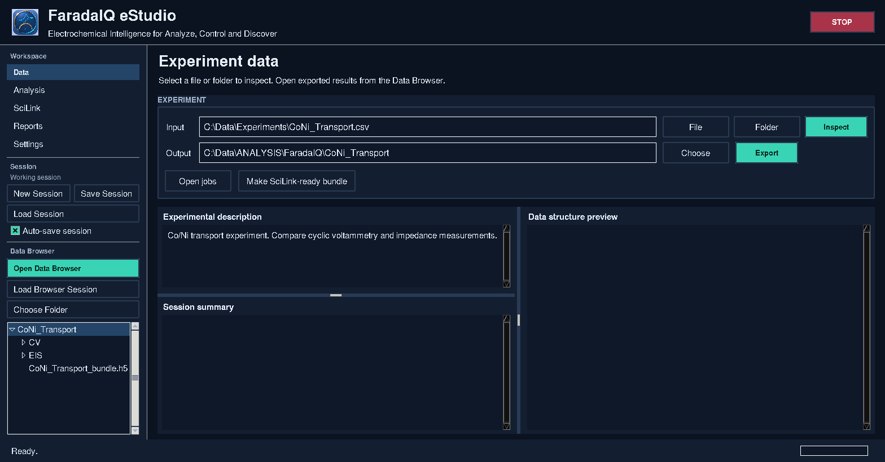
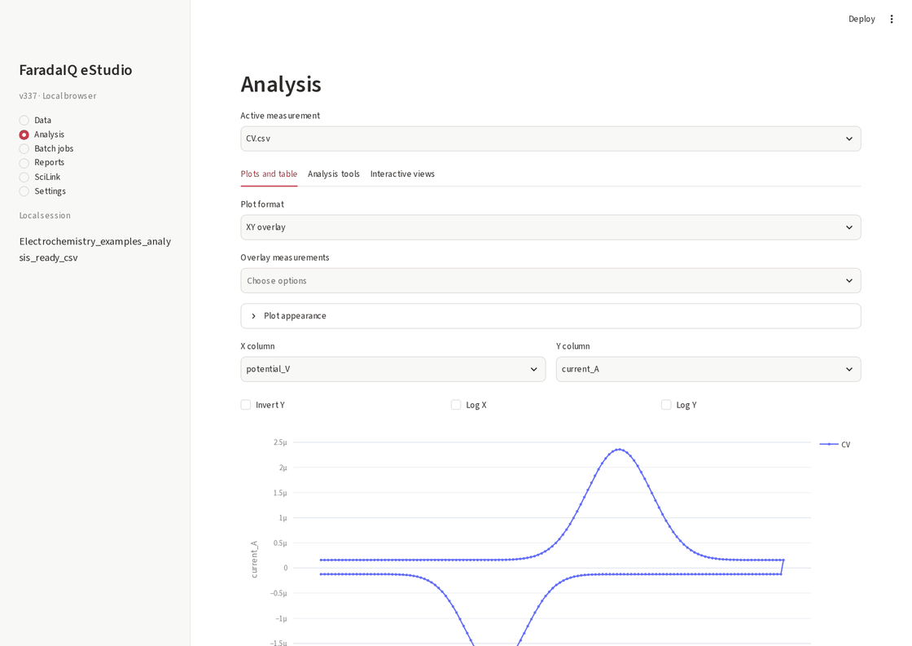
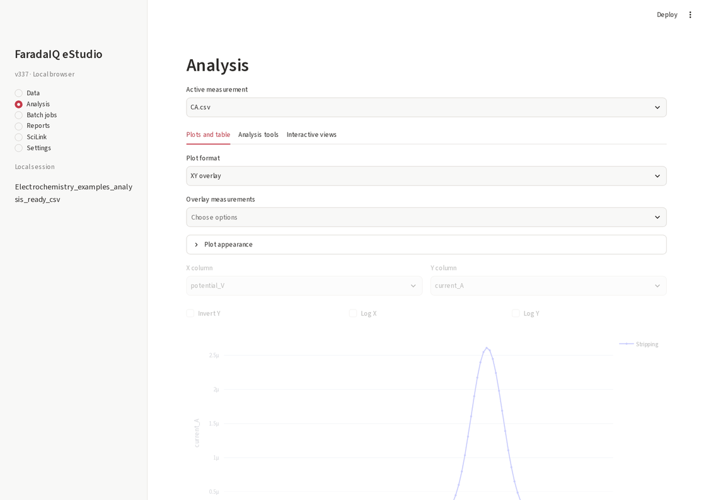
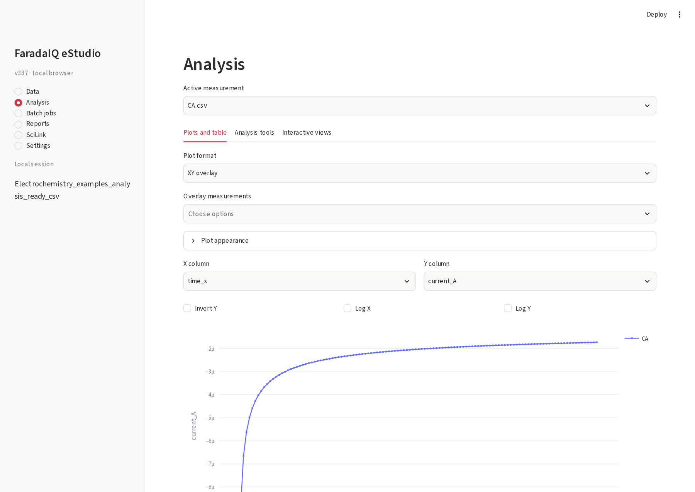
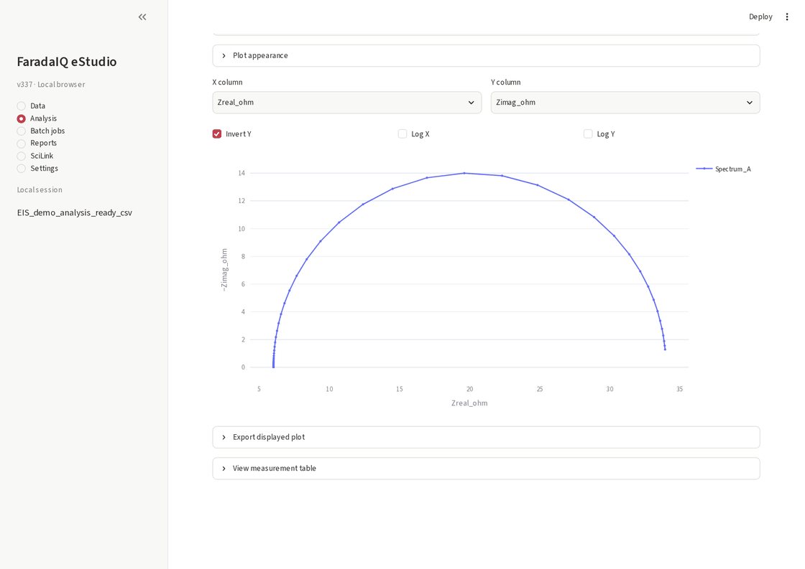
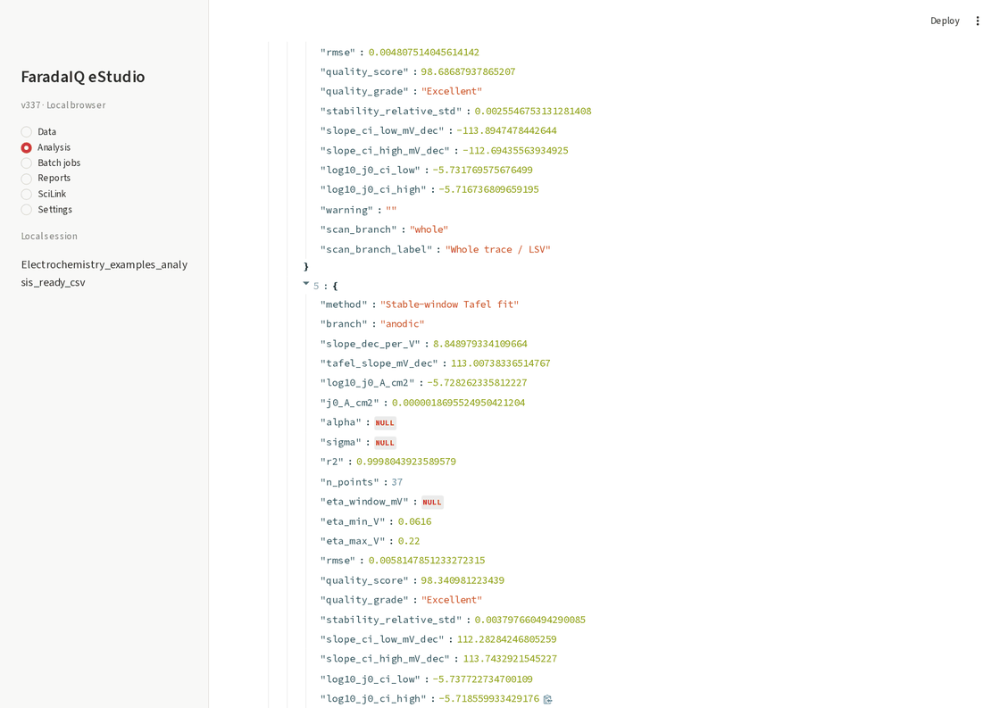
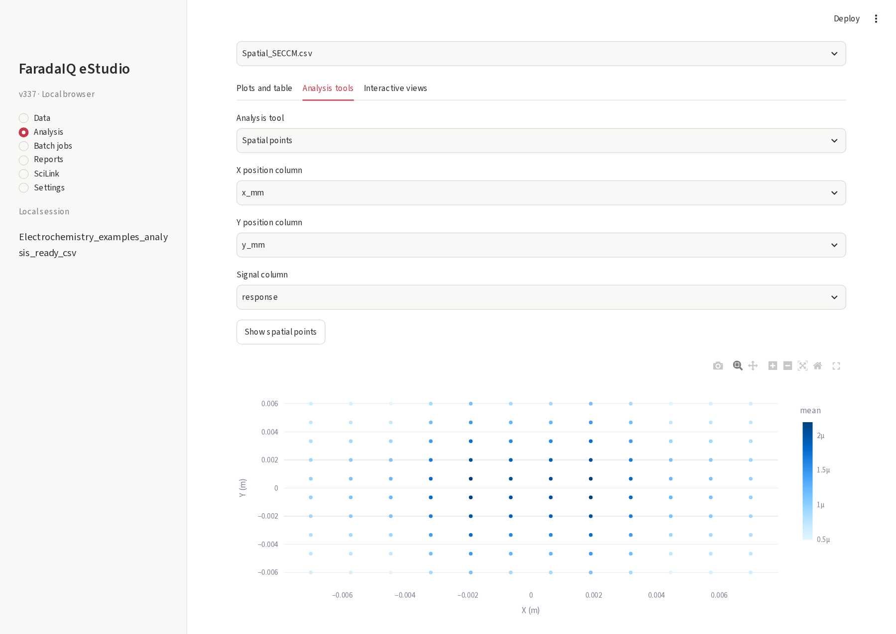
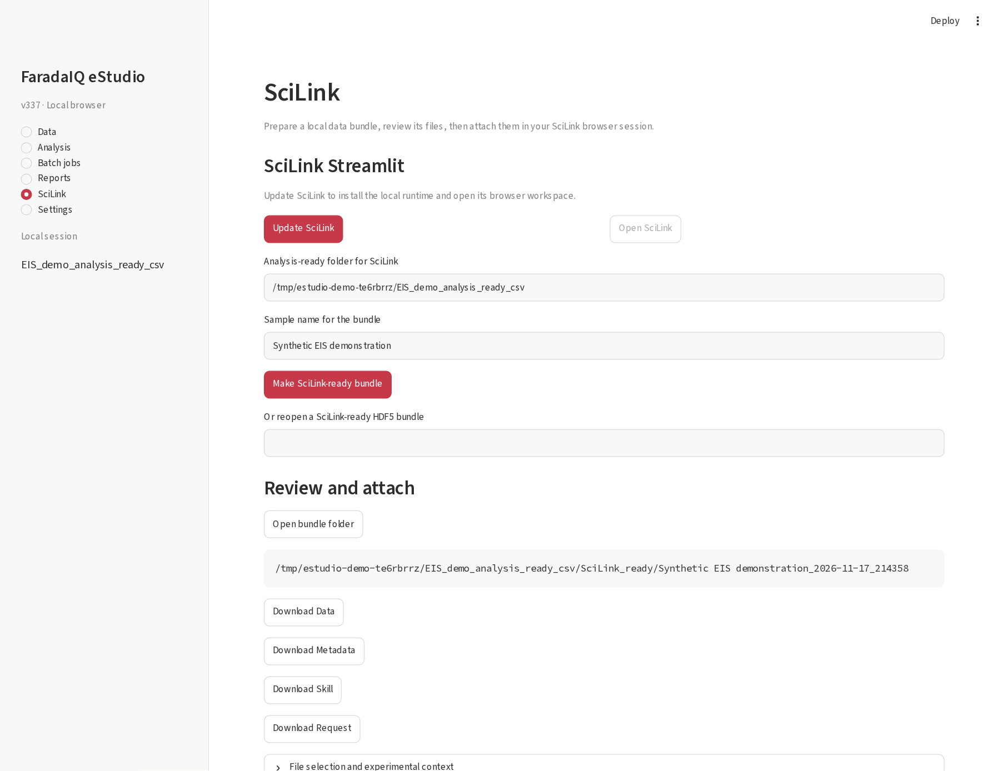
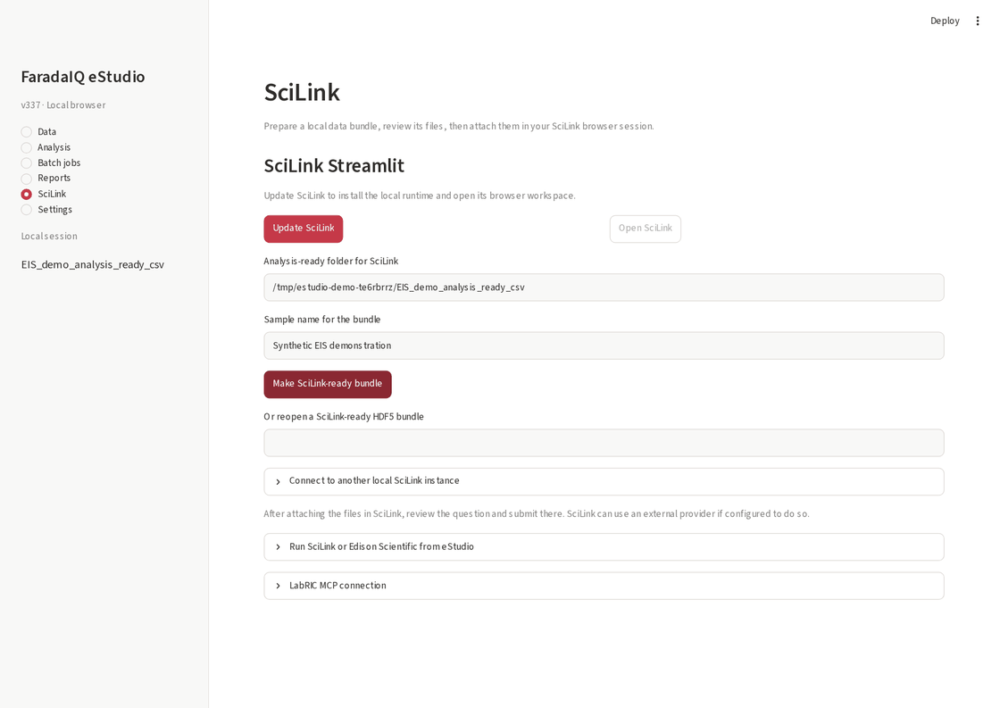

Detailed workflows
Analyze measurements in the desktop app
- In Data, select an instrument file or experiment folder and use Inspect to check measurement counts and units. Keep instrument companion files together.
- Open Data Browser to group measurements by point, method, or cycle, overlay traces, and open technique-specific analysis tools.
- Use Save Session to keep your work. Open Reports for a PowerPoint summary or portable HTML data browser.
View the desktop workspace

Analyze measurements in the local browser
- In Data, choose files or a folder, or enter a local path. Select Open data, then search or filter the measurement catalog. Save the sample, session ID, and notes under Experiment context.
- In Analysis, choose a measurement. Use Plots and table to set axes, display Nyquist or Bode plots, overlay traces, or export the plotted values. Open Analysis tools for method-specific settings and Interactive views for 2D, 3D, and hyperspectral views when the data include the required coordinates.
- Use Data → Open or save a session to keep the experiment context and plot choices. Use Batch jobs to configure, save, and resume an export queue. In Reports, export canonical HDF5, portable HTML, or a PowerPoint summary.
To continue in SciLink, prepare a local HDF5 bundle in either mode. Follow the SciLink handoff.
Supported instrument files
Scientific analysis
Choose the relevant Analysis tool in the v337 local browser. The table also shows where to find the corresponding desktop workflows.
The recordings below use synthetic measurements and were captured in the v337 local browser.
Watch CV, LSV, FSCV, pulse, and stripping measurements

Watch CA, CP, OCP, and deposition measurements


Watch impedance overlays, circuit fitting, lin-KK, and DRT

Watch Tafel, corrosion, Mott–Schottky, and spatial analysis


Installation details
Download the full FaradaIQ_eStudio_v337_package.zip from GitHub Releases. The matching .zip.sha256 file contains the archive checksum. Keep the extracted files together and stay online while the installer sets up the runtime. The main installer checks DearEIS, official pyDRTtools, and managed SciLink before opening the apps. Run the same installer again to repair an incomplete tool setup.
Windows
- In File Explorer, right-click the ZIP, choose Extract All, and open the extracted folder.
- Double-click
Install_FaradaIQ_eStudio_v337.bat. Keep the console open while setup verifies the package and prepares the Python environment. If a compatible Python is missing, setup uses WinGet to install Python 3.12.
- Setup opens FaradaIQ eStudio, FaradaIQ eStudio Browser, and SciLink. Reopen any app from Desktop → Holaris Apps. The default eStudio install folder is
C:\FaradaIQ\eStudio\V337.
macOS
- In Finder, double-click the ZIP and open the extracted folder.
- Double-click
Install_FaradaIQ_eStudio_v337.command.
- Keep Terminal open. The installer reuses Python 3.12 with Tk if available. Otherwise, it downloads and verifies the official Python 3.12 package, then installs it. Enter your Mac administrator password if Terminal prompts for it.
- Setup opens FaradaIQ eStudio, FaradaIQ eStudio Browser, and SciLink. Reopen any app from Desktop → Holaris Apps. The default eStudio install folder is
~/Applications/FaradaIQ eStudio/V337.
If macOS blocks the installer
- After the warning appears, click Done.
- Open → System Settings → Privacy & Security. Scroll to Security and look for the installer you just tried to open.
- After verifying the ZIP against the release’s SHA-256 file, click Open Anyway and confirm in the next dialog. If the button is missing, try opening the installer again and return to Privacy & Security. Apple’s Gatekeeper instructions
macOS security disclaimer. The downloaded eStudio installer is not Apple-notarized. Open Anyway creates an exception for the specific installer. Use it only for a copy obtained from an authorized release source whose SHA-256 checksum you have verified. On an organization-managed Mac, follow your organization’s software approval policy.
Open Terminal, paste the following command, and press Return.
/bin/bash "$HOME/Applications/FaradaIQ eStudio/V337/Start_FaradaIQ_eStudio_v337.command"
For another installed release, use that release’s folder and launcher version. For v337, startup messages are also saved in ~/Library/Logs/FaradaIQ eStudio/startup_v337.log. If the app still closes, include the last lines of that log when reporting the issue.
Local browser
Open FaradaIQ eStudio Browser under Desktop → Holaris Apps. Its local server runs in the background. It uses http://127.0.0.1:8512 when available. The versioned BAT or COMMAND launcher in the installation folder can also run the server in a terminal for diagnostics.
Use a local folder path for large datasets or a mounted network share. The file and folder pickers send selected files to eStudio on the same computer. Keep instrument companions together. When a folder contains both raw instrument files and curated tables, open the curated folder separately to analyze those tables. Imports, plots, deterministic calculations, and reports run on your computer. A reviewed SciLink or Edison request can send selected data to the provider you configure.
The browser launcher records the actual loopback address in the versioned startup log. The desktop app provides its saved native layouts and optional Qt tool windows. The browser provides method-specific controls, interactive charts, and downloadable outputs for the workflows listed under Scientific analysis. See the verification report for platform and service coverage.
If the browser does not start, check %LOCALAPPDATA%\FaradaIQ\eStudio\logs\browser_v337.log on Windows or ~/Library/Logs/FaradaIQ eStudio/browser_v337.log on macOS.
Setup reports which tools are ready and where to find the diagnostic logs. If an integration fails, use the same main installer to retry.
SciLink
Setup checks the official SciLink GitHub repository every time it runs. SciLink lives at C:\FaradaIQ\SciLink on Windows or ~/Applications/FaradaIQ SciLink on macOS, with its own Python environment. Its SciLink shortcut under Desktop → Holaris Apps starts the standalone Streamlit app using the upstream SciLink logo.
Choose Update SciLink in eStudio Desktop or in eStudio Browser's SciLink panel. eStudio compares the upstream Git commit to your installed commit, then installs and verifies the new revision when it changes. An unsuccessful installation leaves the previous SciLink revision selected. Open SciLink launches the installed version. Setup needs access to GitHub and a Python package index to provision SciLink.
Configure the model and credentials in SciLink for interactive analysis. Reviewed jobs started in eStudio can use the managed installation or an explicit SciLink executable or Python override.
Send a bundle to SciLink Streamlit
- Prepare. Open the experiment in either eStudio interface. Select SciLink → Make SciLink-ready bundle. eStudio writes the bundle to the local analysis folder.
- Review. Check the file list and experiment context. Select Open bundle folder to locate the files. In the local browser, Download Data and Download Metadata are available for smaller files.
- Open SciLink. Select Open SciLink in eStudio or use the SciLink shortcut. The launcher opens the actual loopback address in your browser.
- Attach and analyze. In SciLink, choose Analyze, attach the files below, and review the attachments before selecting Analyze. When chat opens, paste or adapt eStudio’s suggested question.

eStudio v337 Browser handoff for the synthetic impedance example.
Watch the SciLink bundle handoff

The HDF5 bundle includes curated tables under /tables/, recorded units, and original table and metadata documents. The full manifest and request record stay in the local bundle folder. SciLink processes the attachments after you submit them using the provider configured there.
Run a reviewed analysis from eStudio Browser
Open SciLink → Run SciLink or Edison Scientific from eStudio, choose SciLink or Edison Scientific, and prepare a local review with the exact prompt and selected files. Configure the service and approve the displayed request before selecting Start reviewed SciLink job or Start reviewed Edison Scientific job. The run folder contains the request and available results and logs. The runner uses the managed SciLink Python when available.
Edison Scientific
Create a key in your Edison Scientific profile. Under Settings → LLM settings → Data Sharing, enter it in Edison API key (session only) and apply the settings. Leave Legacy custom upload URL blank for the standard client. Open Ask Edison Scientific to review the prompt and files before submitting. Client documentation
LabRIC MCP
Enter your LabRIC MCP endpoint and session-only key under Settings → LLM settings → Data Sharing. Use Test LabRIC MCP connection, then enable Use LabRIC MCP cloud context if you want SciLink to query authorized LabRIC data. In the browser, open SciLink → LabRIC MCP connection to check the HTTPS connection and configure LabRIC for a reviewed SciLink job.